As you've seen, every class definition is divided into two parts—the things that instance of the class (objects) know how to do, and the data the those objects contain.
In a procedural program, the procedures that make up the program, and the data that those procedures operate on, are separate. In an object-oriented program, they are combined. This process of wrapping up procedures and data together is called encapsulation.
 In this sense, the
In this sense, the MethodBall class used
encapsulation, because it contained both data and methods
(like draw()) that used the data. In the more
important sense, though, MethodBall violates
the principle of encapsulation because it allows
unrestricted outside access to its data elements.
In this sense, encapsulation is used to enforce the principle of
data hiding. With proper encapsulation, the fields
defined inside a class are accessible to all the methods defined
inside the same class, but cannot be accessed by methods
outside that class, (like the init() method
in the AppletBounce3 program).
Before OOP, if you had two procedures that needed to operate on the same piece of information, you had to either make the data publicly accessible—and risk accidental data corruption as a result of a bug in someone else's code—or you had to pass the data as an argument to each of the functions that operated on it, a tedious and error-prone practice.
With encapsulation, all of the methods in your object can get to the data, but it is still protected from outside access.
Encapsulation in the Real World
When you first start programming, or, if you come from a language that has more liberal rules on data access, like C, you might find encapsulation a fairly strange idea. After all, why make it harder for your programs to access their data?
In fact, out in the real world, all of us are familiar with the
ideas of encapsulation. Let me give you a few examples.
- Today's automobiles are very complex engineering accomplishments;
much more complicated than Henry Ford's original Model-T. Despite
this added complexity, though, driving today's car is similar to,
if not simpler than, driving a Model-T.
That's because, as the cars got more complex, that complexity was hidden behind a simpler interface: the ignition (key), steering wheel, accelerator and brakes. Internal changes, such as the change from carburetors to fuel injections and from gasoline to hybrid don't require drivers to take a new class. That's because those details are encapsulated.
- Your computer is another modern, complex marvel that all of you use every day. Unless you are a hardware tech, though, you never open up the system unit and try to operate it by shorting the pins with a paper-clip. Instead, you use the computer's interface—the mouse, and keyboard— to control the thousands of complex working parts that it contains.
- Finally, think about your TV. Technologically, it's probably at least
as complex as your car or your computer, but you don't need a license
or a degree to operate one. Thanks to the magic of encapsulation,
exemplified by the remote control, every child in the country
can harness that power.
Just as with automobiles, computers and TVs, when it comes to programming, instead of making things more difficult encapsulation will actually make your objects both safer and easier to use.
Private Fields
The key to properly encapsulating your code is to use the
Java access modifier, private. As a rule,
you should always use private in front of
every field definition.
Some of you may note that the Java class libraries
don't always follow this advice. Specifically, the measuring
classes, like Rectangle, all have public
fields. The designers of Java generally regard the decision to
make these fields public a real mistake that lead
to performance problems in later versions of Java. If you'd
like to read more about this, just Google "Joshua Bloch" + "public fields".
EncapsulatedBall
To try this out, we'll create a new ball class,
EncapsulatedBall by copying and renaming
MethodBall.java as shown here:
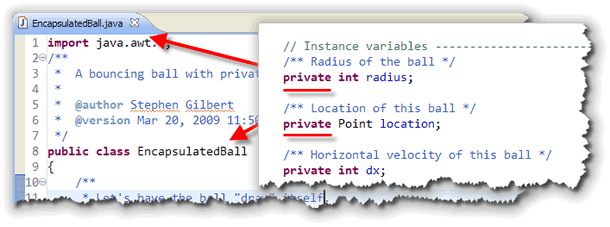
After you have the new file, modify each of the fields by changing thepublic access specifier to
private as shown on the right.
AppletBounce4
To create the fourth version of AppletBounce, just make
a copy of version 3 and rename it to AppletBounce4.java.
Then, change the ball variable, so that it uses
the new EncapsulatedBall class as shown here:
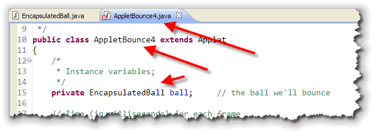
As you can see, things didn't go so smoothly this time. Now that all of the ball's fields areprivate, your applet
can no longer modify them in its init() method.
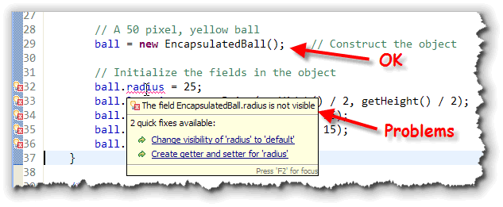
There are two solutions to this problem; the first solution we'll look at involves adding accessors and mutators to the class.
Accessors, Mutators, Effectors
When you think about objects and methods, there are generally three different kinds:
- Mutator methods change the state of an object,
by changing the values stored in one of the fields. In
the
MethodBallclass,move(),bounceHorizontalandbounceVerticalare all mutator methods. - Accessor methods are methods that return some
information about an object, but don't change the object.
Accessor methods are those like
length()orcharAt()in theStringclass. - Effector methods perform an action, but don't
modify the object or return a value. The
draw()method in theMethodBallclass, is an example of this kind of method.
There is no offical computer-science term for methods like this; I've used the term effector because it seems useful to describe an instance method that isn't an accessor or mutator.
Getters and Setters
Simple accessors and mutators usually return information about,
or change one field inside the object. In Java, these are called
getters and setters, since the method names start
with get or set by convention.
The convention for boolean getter methods
is to start with the word is rather than get.
To see what a mutator and accessor look like, let's add both of
them for the color field in the EncapsulatedBall
class. (The pictures show MethodBall, but just
ignore that.)
The color Accessor
Here's what the accessor method looks like:
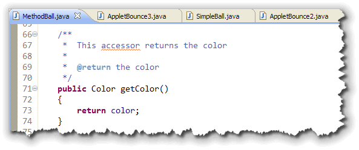
Notice that:- the methods starts with the word get.
- the name contains the attribute you want access to,
capitalized. Our field is named
color, so the second half of the name isColor. - the method returns the requested field.
Notice also that the Javadoc includes both a description line
and an @return tag containing a description of
the value returned. Often these have exactly the same verbiage,
but you still need to include them both. They are used in
different places when the documentation is generated.
The color Mutator
Here is the mutator method:
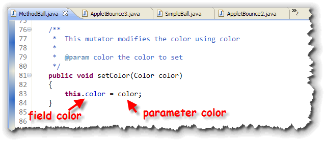
Notice that:- the naming is almost identical to that used for the
accessor, except the word
sethas been substituted forget. - the mutator needs to supply a new value for the field; in this
case that's the parameter variable named
color. - inside the method, the new value (from the parameter) is assigned to the field of the same name.
With mutators, it's common to name the parameter the same as the
field that it is going to replace. When you do this, inside the
method, the variable name refers only to the parameter.
To assign the value, you must use the keyword this
to indicate that you want to store the parameter value into the
field named color, and not back into itself.
If you use different names for your mutator parameters, though,
(perhaps newColor in this case), then you don't
need to use this to refer to the field named
color; you could simply write:
color = newColor; // color is the field color in this case
Fixing an Error
After you've added the setColor() mutator, you can
fix the last error inside the AppletBounce4.init()
method, by changing:
ball.color = Color.YELLOW;
to
ball.setColor(Color.YELLOW);
A Cool Shortcut
One of the nice things about working with a full-featured Integrated Development Environment, like Eclipse or NetBeans, is that it will do most of the work for you.
In this case, I used Eclipse to actually write all of the code
for the two methods you've just seen, like this:
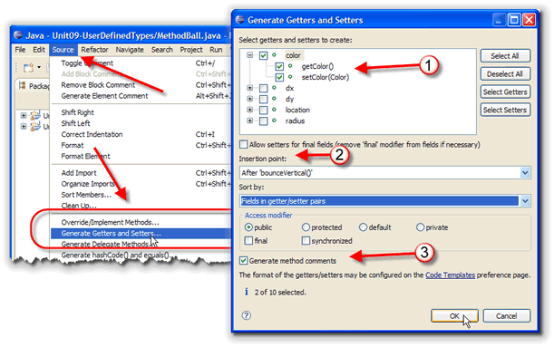
To do this, you just:- Choose Generate Getters and Setters from the Eclipse Source menu, as shown on the left.
- Select the fields you want to generate methods for. In this
case, I've expanded the
colorfield and have selected bothgetColor()andsetColor(). - Select where you want the methods to appear, how they should be grouped (all getters followed by setters, or paired getters and setters), and whether you want automatic comments generated.
The results are what you've just seen. A word of warning, though. Don't generate unncessary getters and setters. As we'll see in the next lesson, one of the principles of object-oriented programming is to use encapsulation to hide unnecessary complexity. Having a lot of getters and setters tends to frustrate that goal.
Finishing EncapsulatedBall
So, exactly what accessors and mutators does
EncapsulatedBall actually need to work?
One way to find out is to look at the code that uses the
class:
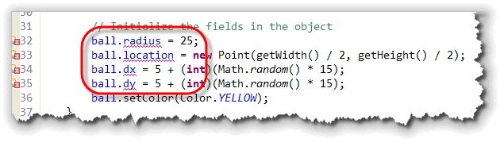
If you look atAppletBounce4, you'll see that we
now have four errors (since you fixed one of those errors by
adding the setColor() method.).
We actually only need mutators, not accessor methods. You can write them using any of the techniques in the last section, or, you can make use of another Eclipse shortcut, known as Quick Fix.
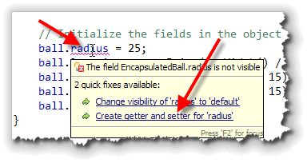
A Quick Fix
Whenever a syntax error occurs, and you hover your mouse over the underlined error in Eclipse, the IDE will pop-up a small window contining suggestions for fixing the problem. Here, you can see that one of the suggestions is to add getters and setters to the code.
To use the Quick Fix popup, just click the underlined
hyperlink, and you'll be taken to a window that looks like this:
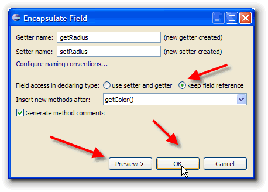
Notice that:- you must add both getters and setters when you use the Quick Fix feature. If you use Generate Getters and Setters on the Eclipse Source menu, you can which accessors or mutators you want to add.
- Quick Fix defaults to modifying all of the direct field access inside your class as well (which clutters up the code in my opinion). If you don't like this, then you need to click the radio button that says "keep field reference" as shown here.
When you use Quick Fix, you can see what changes will be written into
your source code by clicking the Preview button. Here's what
the preview looks like when using Quick Fix to generate getters and
setters for the location field:
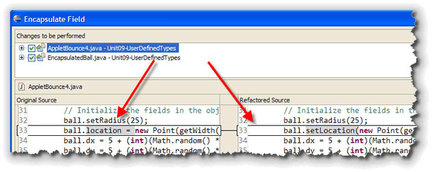
Setting the Speed
 As I mentioned at the end of the last lesson, you don't have
to add both acccessors and mutators for each field. In fact,
you probably don't want to. Adding getters and setters
for each and every field is only a little better than making
the fields
As I mentioned at the end of the last lesson, you don't have
to add both acccessors and mutators for each field. In fact,
you probably don't want to. Adding getters and setters
for each and every field is only a little better than making
the fields public.
Instead, you should attempt to only provide those methods
that are needed. In our case, it looks like we need the
mutator methods to initialize the initial location, color and
so forth, but we really don't need to let the applet
read that information. That means that we can
just delete the getRadius() field automatically
created by the Eclipse Wizard.
Sometimes, though, you want a mutator that sets several fields
at once. For instance, instead of allowing Eclipse to automatically
create the setDX() and setDY() methods,
why not just add a single mutator method that
changes both fields: setSpeed().
When you do this, you can't use the Eclipse help features; neither Source->Generate Getters and Setters, or the Quick Fix will automatically write a two-field mutator; you have to do it yourself.
Fortunately, it's not much more difficult than writing any
of the methods you practiced on during the first half of the
class:

- Start with the keywords
public void. Mutator methods modify the current object, so they usually don't have a returned value. (It is acceptable to return abooleanflag, though, so you can signal if the mutator was unable to change the object; it's just not very common.) - Mutator methods will start with
setand then the object attribute that you are changing. Note that object attributes don't have to correspond to fields defined inside the object. Fields are used to implement object attributes, but are not the attributes themselves. In our case, the attribute we'll be changing is the speed of the ball. - Mutators will often (perhaps most of the time) have parameters
that are used to change the object attribute. In our case,
we want two parameters: a new value for
dxand a new value fordy. - Inside the mutator, use the parameters to change the
actual fields used to represent the object's
attributes. In our case, we'll use the parameter
dxto modify the fielddx. Since both the parameter and the field have the same name, don't forget you'll need to include the keywordthisas a prefix to the field reference.
Once you've finished this mutator, the AppletBounce4
init() method can be finished up like this:
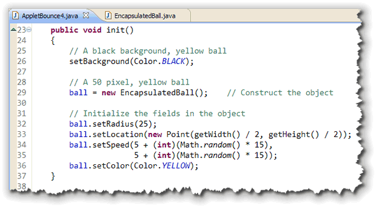
You can download and run the finished versions of AppletBounce4 and EncapsulatedBall by clicking the links in this sentence.
Coming Next...
In this lesson you learned about encapsulation: making your fields private and then writing accessor and mutator methods to provide any necessary access.
In the next lesson, we'll tackle another class-creation topic: how to write constructors so that you can initialize your objects when they are created.